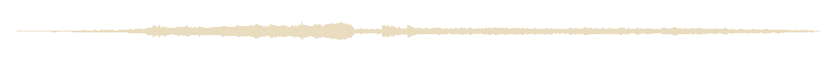
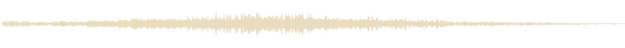
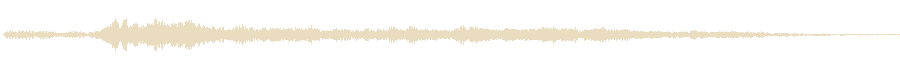
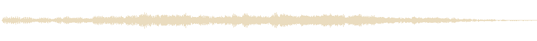
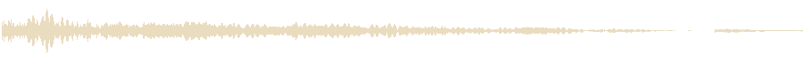
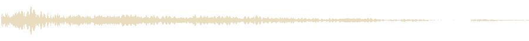
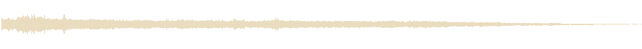
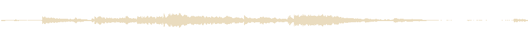

Tour 1 : le tic-tac A2 est dans le jeu (PR #181). Aucune levée ni chute ne collait : un seul fichier étiré sur une scène de 7 secondes rate ses moments.
Ce qui change : la scène a maintenant quatre temps forts, chacun avec son son, joué par le jeu à son instant exact : la levée et le vol (0 s), le lâcher (4,8 s), l'impact (5,21 s), le relevé (5,96 s). Chaque son est monté dans FMOD en couches, chaque couche à son moment : les menottes claquent quand les chaînes apparaissent sur la patte droite, la gauche, puis le corps.
Sans question : la vidéo est la vraie scène, filmée en partie automatique. « Sur la vidéo » la rejoue avec cette proposition à son moment et, pour les autres temps forts, celles que tu as aimées (sinon celles par défaut). Sons de Freesound, CC0 ou CC BY (crédités), au volume « plus présent » que tu as choisi au tour 1.
Le son provisoire fabriqué à la main.
Un grondement magique qui culmine quand le chat arrive en haut ; une menotte claque sur chaque patte puis autour du corps, au moment où les chaînes apparaissent ; une présence sombre pendant que sa carte se montre.
Dark Teleport.wav, oldestmillennial, CC BY 3.0 ; CHAINHndl_Chain Metal Rattle 01, KVV_Audio, CC BY 4.0 ; Unseen Evil Lurking, rahulsawla_, CC0
Une cymbale à l'envers descendue de cinq demi-tons qui gonfle jusqu'en haut ; les mêmes menottes ; une nappe qui ondule pendant le vol.
Reverse Crash Cymbal Projection, deleted_user_7146007, CC0 ; CHAINHndl_Chain Metal Rattle 01, KVV_Audio, CC BY 4.0 ; The Witch house_3.wav, DneproMan, CC0
Des résonances de métal qui grimpent ; les mêmes menottes ; la présence sombre, plus basse.

Metallic Horror Riser FX.wav, eldiariosonoro_, CC0 ; CHAINHndl_Chain Metal Rattle 01, KVV_Audio, CC BY 4.0 ; Unseen Evil Lurking, rahulsawla_, CC0
Comme aujourd'hui : silence jusqu'à l'impact.
Un souffle d'air qui accompagne la chute, et les chaînes qui se relâchent.

long wispy woosh1.wav, newagesoup, CC BY 4.0 ; Steel chain being dropped and dragged, ani_music, CC0
Un sifflement court et plus grave, et les chaînes qui se relâchent.

SFX_WHOOSHYKORN_falling_06.wav, MrFossy, CC0 ; Steel chain being dropped and dragged, ani_music, CC0
Juste les chaînes qui se relâchent, sans souffle.

Steel chain being dropped and dragged, ani_music, CC0
Le son provisoire fabriqué à la main.
Le corps qui s'écrase sur le plancher, les chaînes qui tombent avec lui.

Falling body hits the floor, courtneyeck, CC0 ; Steel chain being dropped, ani_music, CC0
La même chute avec un splatch mouillé par-dessus : lourd et drôle à la fois.

Falling body hits the floor, courtneyeck, CC0 ; Wet Splat 1.mp3, nebulasnails, CC0 ; Steel chain being dropped, ani_music, CC0
Un écrasement mou, le corps qui retombe, des chaînes plus claires.

Squish impact, Bertsz, CC0 ; BodyFall.wav, 000600, CC0 ; chaindrop 1, Logicogonist, CC0
Comme aujourd'hui.
Ses chaînes cliquettent quand il se redresse, un froissement de tissu.
CHAINHndl_Chain Metal Rattle 01, KVV_Audio, CC BY 4.0 ; foley cloth rustle.wav, martian, CC0
Un cliquetis de chaînes plus léger.

CHAINHndl_Chain Metal Rattle 01, KVV_Audio, CC BY 4.0
Avec ce que tu as aimé ci-dessus.